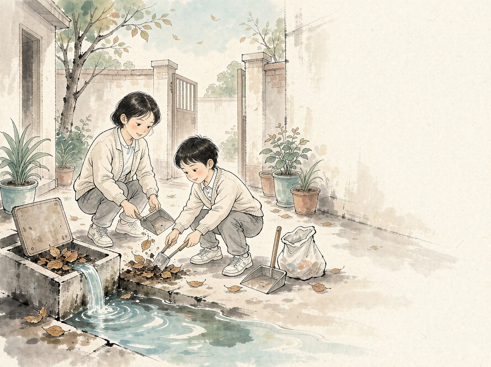

夏有禹，商有汤
承接上句“相揖逊，称盛世”，世系由二帝揖逊的公天下，转入家天下之始。
禹建夏，汤立商，开启三代的前两朝。
延续阴阳框架：禹【阳】，承揖逊之余风，以大功定水土，劳身开基业，虽受禅而传子，是阳之盛极而转；汤【阴】，顺天应人，革夏之弊，收敛纷乱、重立纲纪，是阴之肃定。
一启一承，一开一敛，由公天下的揖让，转入以天命更迭的王朝循环。
对比：相揖逊，称盛世 / 夏有禹，商有汤
尧舜是公天下，重心在“逊、让、公”；禹、汤之后，天下传于子嗣，家天下格局成型。
禹【阳】：主开创、疏决、劳苦。洪水滔天，禹踏遍九州，定水土、划九州，立下旷世大功。原本承接舜的揖让，却在身后不传贤而传启，阳德盛大，而制度悄悄转向私系传承，是阳极而变；
汤【阴】：主革故、肃敛、归正。夏桀荒乱，法度崩坏，汤顺天而伐，平定乱世，收敛天下涣散的秩序，重新立定君臣、天命之纲，以肃静收敛之功，安定四海，是阴之承定。
尧舜的揖逊，是权位以德流动；禹汤开启的世代，是天命随治乱循环。阳开功业，阴定纲常，阴阳更迭，王朝兴替的节律自此显现。
对比前文阴阳太和：阳开大功而藏转变之机，阴革乱局而守天命之序；不再是相让太和，而是治乱相替的阴阳往复。
勘破俗见：两类偏执。其一，单纯褒扬大禹而淡化“传家”这一制度转向；其二，简单把商汤伐桀看作单纯的武力征伐，忽略其背后“革弊复正”的义理内核。契合般若范式：佛说夏有禹商有汤，即非夏有禹商有汤，是名夏有禹商有汤。禹、汤、夏商皆是教化取象之筏；本心之中正才是本体，不执着于“圣王恒善”的固定相。
大禹建立夏朝，商汤建立商朝。
禹历尽辛劳，治理洪水，开启夏代；
汤革除夏的乱政，安定天下，立定商的纲纪。
一阳开创，一阴肃定，开启三代治乱循环的开端。


落到心上理解
揖逊的盛世，怎会一转就出现禹、汤这样以功业开国的人物？
承接前面阴阳节律反观自心。
禹之阳，是奋发开创、攻坚克难，付出巨大辛劳，打通阻滞、建立格局；功业既成，容易生出“我所开创，当归属于我”的执念，便是阳极转私的伏笔。
汤之阴，是旧有格局败坏之后，勘破弊病、除乱归正，收敛涣散，重新建立稳定的边界与秩序。
能开创，也要知开创之后的执念风险；能除乱扶正，也要明白法度本身也会随时间慢慢腐化。知兴替，不执功业，不恋旧制，不住于治乱之相，即是无住而行。
一味神化大禹，回避传子带来的制度转向
重点观察阳盛之后，从“公”向“家”的流变
只看成征伐杀伐，忽略商汤“革弊复正”的内核
革命本义：革去失序，复归中道秩序
只喜开创，看不到功业背后附着的占有之念
开创与守制，同含阴阳生灭的循环
- 禹【阳】：劳苦开山，平定水土，大功昭著，阳极而制度潜移；
- 汤【阴】：顺天革乱，收敛涣散，重立纲纪，肃乱以归正；
- 时代节律：公天下转为家天下，开启治乱循环；
- 读史心法不变：考世系，知终始，体察“阳开立业，阴革安邦”的循环节律。
一、勘俗见。辛苦开创、做出成绩之后，要警惕把成果牢牢占为己有的执念；旧的秩序腐朽时，要有勇气修正、重整。
二、现代对照。攻坚克难打开局面之后，不生占有之心；当原有规则弊病丛生，懂得及时调整纠偏。
三、承接常变主线。中正本心恒常不变（常）；禹汤立国、天命治乱，是因缘生灭显发的事相（可变之相）。
四、承接教与学二分。师长示范禹阳汤阴、开创革故的结构，属于施教一侧；学人以此觉察自心，学开拓，学勘弊扶正，是自主修习。
承接选择力练习：阳以开难立业，阴以革乱安邦，循治乱之节律。
夏有禹，商有汤
一字义与句读
夏有禹：大禹，夏朝开国之君；商有汤：成汤，商朝开国之君。
全句释义：大禹开创夏，成汤建立商。禹以阳功定九州水土，功业极盛而天下转入家传；汤以阴肃革除夏桀之乱，重新安定天下，立纲纪秩序。
二命题考辨
（1）阴阳结构推演
禹属阳：疏通洪水、划九州，是向外开拓、疏通阻滞。舜传禹，仍是揖逊之形，而禹不传贤、传其子启，公天下的通道自此闭合。阳德盛大，而附着了“功业属我”的取着，是阳极之变。
汤属阴：夏桀法度崩坏，天下散乱，汤起而革之。伐桀不是为一己私欲，是收拾崩坏，收敛乱象，重建稳定的中道秩序，是阴德肃敛之用。
尧舜的循环是“相让”；夏商开启的循环是“治乱、天命更替”。一治一乱，一盛一衰，阴阳往复。
（2）与全书体系互参
对照般若：生大功、立大业而不住功业之相；革旧乱立新法，亦不住新秩序之相。《金刚经》应无所住而生其心，正是在兴替之中不被兴衰牵动。
对照老庄：老子“物壮则老”，禹之阳极而转私，正是物壮之象；汤的革乱，便是在衰败之时，重新回调平衡。
（3）对照当下现代语境
一个团队、一个体系：有人攻坚克难打开局面（禹阳），局面稳定之后，容易形成利益固化；等到体系弊病累积、秩序涣散，便需要有人勘破沉疴、重整框架（汤阴）。开创之后难在不私，守制之后难在知弊。
（4）般若范式互参
禹、夏、汤、商，是指月之筏。
联动三才五蕴太极空杯模型：中正自性是空杯本具之体；开创、革乱、治乱交替，都是缘起层面阴阳生灭的显现。明白循环之理，而不被兴衰困住。
呼应“本乎数”：一阳一阴，一开一革，治乱循环。
延伸义理：
《金刚经》应无所住而生其心：禹汤兴作，行济世之事，不住圣王、王朝之相。
《道德经》物壮则老，谓之不道，不道早已：禹阳极而私生，正是壮极而衰的开端。
《坛经》本来无一物：王朝、功业、天命，皆是外缘流转，本心不受其缚。
三跨典互参（老庄、般若对照）
《道德经》祸兮福之所倚，福兮祸之所伏：治乱循环，正是祸福倚伏的显现。
《庄子》一治一乱：直接点出三代之后，天下落入这个阴阳往复的大节律。
串联前文：长线考世系，三皇开基、二帝揖逊成公世；禹汤开启家天下，治乱更替的大轮自此运转。
四和前面课程的张力
次第链条继续延伸：
首孝悌 → 次见闻 → 知某数，识某文 → 一而十，十而百 → 百而千，千而万 → 三才者，天地人 → 三光者，日月星 → 曰春夏，曰秋冬 → 此四时，运不穷 → 曰南北，曰西东 → 此四方，应乎中 → 曰水火，木金土 → 此五行，本乎数 → 十干者，甲至癸 → 十二支，子至亥 → 曰黄道，日所躔 → 曰赤道，当中权 → 赤道下，温暖极 → 我中华，在东北 → 曰江河，曰淮济 → 此四渎，水之纪 → 曰岱华，嵩恒衡 → 此五岳，山之名 → 古九州，今改制 → 称行省，三十五 → 曰仁义，礼智信 → 此五常，不容紊 → 地所生，有草木 → 此植物，遍水陆 → 有虫鱼，有鸟兽 → 此动物，能飞走 → 稻粱菽，麦黍稷 → 此六谷，人所食 → 马牛羊，鸡犬豕 → 此六畜，人所饲 → 曰喜怒，曰哀惧 → 爱恶欲，七情具 → 匏土革，木石金。丝与竹，乃八音 → 高曾祖，父而身 → 身而子，子而孙 → 自子孙，至玄曾 → 乃九族，人之伦 → 父子恩，夫妇从 → 兄则友，弟则恭 → 长幼序，友与朋 → 君则敬，臣则忠 → 此十义，人所同 → 凡训蒙，须讲究 → 详训诂，明句读 → 为学者，必有初 → 小学终，至四书 → 论语者，二十篇 → 群弟子，记善言 → 孟子者，七篇止 → 讲道德，说仁义 → 作中庸，子思笔 → 中不偏，庸不易 → 作大学，乃曾子 → 自修齐，至平治 → 孝经通，四书熟 → 如六经，始可读 → 诗书易，礼春秋 → 号六经，当讲求 → 有连山，有归藏 → 有周易，三易详 → 典谟训，诰誓命 → 号周书，七十篇 → 有国风，有雅颂 → 号四诗，当讽咏 → 诗既亡，春秋作 → 寓褒贬，别善恶 → 三传者，有公羊 → 有左氏，有谷梁 → 经既明，方读子 → 撮其要，记其事 → 五子者，有荀扬 → 文中子，及老庄 → 经子通，读诸史 → 考世系，知终始 → 自羲农，至黄帝 → 号三皇，居上世 → 唐有虞，号二帝 → 相揖逊，称盛世 → 夏有禹，商有汤
呼应“人不学，不知义”：知禹阳开功、汤阴革乱，家天下开启、治乱循环之义；
呼应“玉不琢，不成器”：以治乱往复打磨自心，建功而不执，见衰而不惊；
呼应“教之道，贵以专”：专守中正，循世系长线，体察王朝兴替的阴阳节律。